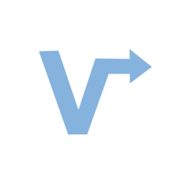

Anshul Vij
Welcome to my website!
Software Development Engineer at Amazon 💻
Full-Stack, App Dev, and ML Enthusiast
Education
-
 University of North Carolina - Chapel HillBachelors in Computer Science and Economics
University of North Carolina - Chapel HillBachelors in Computer Science and Economics- Dean's List, Global Honors, Honors Carolina, AIESEC Global Entrepreneur, Covenant Scholar, Wood Scholar
- 3.8 / 4.0 GPA
- 2022 - 2026
Experience
-
 Senior Software Development EngineerAmazon
Senior Software Development EngineerAmazon- Designed and implemented serverless cloud-based Asset Depreciation Service for AWS, achieving 200 TPS, enhancing efficiency by 30%, and reducing manual General Ledger interventions by 80%
- Implemented Agile methodologies to lead 3 junior engineers in architecting a full-stack, real-time UI and depreciation calculation engine, emphasizing modern engineering practices such as 100% unit test coverage and load testing
- Implemented a full CI/CD pipeline using AWS tools like Glue, AWS Batch, DynamoDb, Lambda, and S3, facilitating 10M+ fixed assets real-time event processing and service manageability
- Engaged in service ownership, collaborated with product, engineering and operations teams to optimize products, improve infrastructure, ensuring service scalability, resilience, and building reliable distributed systems
- Nov 2022 – Present
-
Software Development EngineerAmazon
- Led automation in migrating 1B+ assets emphasizing large-scale data integration using cloud tools like Kinesis streaming, Lambda ETLs, DynamoDb and PostgreSQL, ensuring 100% accuracy and enterprise-scale reliability
- Awarded for Operational Excellence after leading continuous improvement initiatives, and standardizing service health dashboards using CloudWatch, achieving a 40% reduction in troubleshooting time
- Actively participated in code reviews, refactoring, and maintained build/deployment pipelines, adhering to best practices like Test-Driven Development and Continuous Deployment
- Jun 2021 – Nov 2022
-
Front End EngineerVector Rideshare
- Designed responsive web applications on GCP Google Cloud Platform using Bootstrap, HTML/CSS/JS, PHP, MySQL
- Optimized web stack deployment by 35%, decreased server costs by 85% and helped lead 1K+ downloads
- Collaborated on app design and UX, using Asana, Adobe XD, Figma for innovation and efficient project management
- Apr 2020 – Jun 2021
-
 Software Engineer Co-OpIBM
Software Engineer Co-OpIBM- Supported and debugged over 1,300 CICS regions across multiple LPARs, ensuring resilient, scalable service designs
- Demonstrated technical depth in cloud platforms by collaborating with a 150+ cross-functional team to streamline data and translate functional to business requirements
- Drove automation to improve service health and manageability, leading to efficient data consolidation from tables, VSAM and flat files, and crafted enhanced online screens via CICS
- Jun 2020 – Dec 2020
-
 Machine Learning EngineerTweeCare
Machine Learning EngineerTweeCare- Collaborated on a mental health app, integrating advanced machine learning LLMs to analyze Twitter behaviors
- Utilized Swift, C#, Java, Scala, and Python to develop a responsive application that employed natural language processing, Azure's ML capabilities, and a custom-built LLM to identify and flag negative tweets in a feed view
- Partnered with UX/Product Designers, leveraging Figma for web designs, incorporating user feedback and modern design principles, leading to a 25% increase in customer retention
- Jun 2020 – Dec 2020
-
- Developed a Real-Time Threat Detection application on a AWS VPC, achieving <1 ms latency to proactively detect and mitigate DDOS attacks on a PCI-compliant payment platform, ensuring resilient and scalable service designs
- Leveraged modern engineering practices with AWS tools to enhance security and real-time response capabilities
- Integrated Slack API and analytical tools for real-time notifications, optimizing service health and manageability
- Jan 2020 – May 2020
Projects & Extracurriculars
-
- Co-Founder of Yummy Fleet - an on-campus food ordering and delivery app designed to make student dining experience more flexible
- Leveraged Adobe XD, Case Model Design, Java, Notion, Swift. Tech design planning, weekly scrum meetings, and mobile and web app development
- Conducted market analysis to target an average of 40% of college students that skip 4-6 meals each week
- Facilitated product delivery management, agile sprint planning, backlog grooming & app development on XCode & Swift
- Launch Chapel Hill is a business accelerator and venture lab located in downtown Chapel Hill, NC. Launch is a partnership between UNC Chapel-Hill, Orange County and the Downtown Partnership dedicated to growing and nurturing the Chapel Hill startup community.
- Article Link 🔗
- Jun 2020 - Aug 2020
-
 Web Developer and Digital Marketing InternAIESEC
Web Developer and Digital Marketing InternAIESEC- Developed optimized landing pages in HTML5/CSS/WordPress and implement servers and PHP MySQL database for domain hosting and website functionality
- Managed social media marketing via SEO techniques that increased daily traffic by 30%.
- LPresent in over 127 countries with over 40,000 members, AIESEC is the world's largest youth-run organization. Startup Unicorns Project is a global 6-8 weeks professional internships for internationals in Egypt's top startups to support United Nations Sustainable Development Goals.
- Website Link 🔗
- May 2019 - Jul 2019
-
 Project Manager and AdvisorLaunch Local
Project Manager and AdvisorLaunch Local- Developed optimized landing pages in HTML5/CSS/WordPress and implement servers and PHP MySQL database for domain hosting and website functionality
- Managed social media marketing via SEO techniques that increased daily traffic by 30%.
- LPresent in over 127 countries with over 40,000 members, AIESEC is the world's largest youth-run organization. Startup Unicorns Project is a global 6-8 weeks professional internships for internationals in Egypt's top startups to support United Nations Sustainable Development Goals.
- Article Link 🔗
- Jan 2020 - Jun 2021